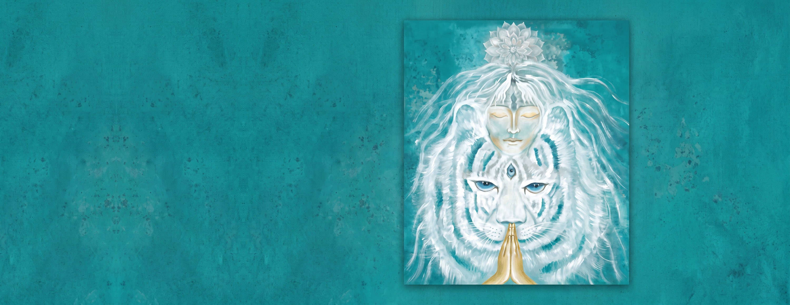
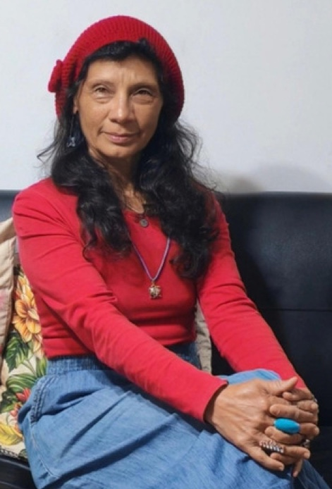

Mujer Creadora
Exposición colectiva
Funza, Colombia

La naturaleza, el color y la transformación de los materiales atraviesan la práctica de Blanca Pava. Una exploración que encuentra nuevas posibilidades en lo cotidiano y nos invita a detener la mirada.
Del óleo sobre lienzo al ecoarte, el dibujo, la instalación y la fotografía: un recorrido por la experimentación, el color y la transformación personal. Esta selección reúne obras del archivo y de la propuesta de exposición individual para el Salón de Artistas de Funza, fechada en agosto de 2026.
Explorar la propuesta · PDF30 entradas · Todas
Los títulos y las fichas técnicas proceden del catálogo cuando están documentados. «Paisaje circular» y «Felinos entre el follaje» conservan nombres descriptivos. Las series se muestran como una entrada; la resolución de las imágenes extraídas depende del PDF original.

Crear es también una manera de cuidar lo que nos rodea.
Blanca Graciela Pava Cáceres inicia su camino en las artes plásticas en 2014, en Madrid, Cundinamarca. En 2015 se vincula al Centro Cultural Bacatá, en Funza, donde amplía su formación en pintura, dibujo experimental, investigación, creación e instalación.
Desde 2020 centra su trabajo en el ecoarte y el arte sostenible. Experimenta con cartón, semillas, cáscaras de frutos secos y otros materiales no convencionales, junto con óleo, acrílico, color y textura. Su interés por la instalación reúne luces, sombras, tejido social y obra inclusiva.
Su práctica se extiende al dibujo, la acuarela, la fotografía y las creaciones textiles. A través de residencias y procesos colaborativos, entiende el arte como un espacio de encuentro para recuperar la memoria, la identidad y los espacios públicos, desde el respeto a la diferencia.
Formada en Artes Plásticas y Visuales y en Gestión Cultural, representa a las artes plásticas en el Consejo Municipal de Cultura de Funza para el periodo 2026–2029.
Consultar currículo · PDFExposición colectiva
Funza, Colombia
Exposición virtual internacional · Día Internacional de la Mujer
Punto de Encuentro
y Munay Comunicaciones
Un colectivo de cuatro artistas que impulsa espacios de aprendizaje, residencias, intercambio de saberes y exposiciones.
Creación del colectivo
Exposición
Barcelona, España
Participación artística
Coatepec, México
Salón de Artistas
Funza, Colombia